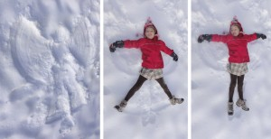

Inicio›Blog›Invierno›Ángel 02InviernoÁngel 0228 diciembre, 2010 Hannah tumbada en la nieve dibuja un ángel moviendo brazos y piernas. .← ¡Feliz año nuevo! Happy new year! Frohes neues Jahr!Castillo 02 →